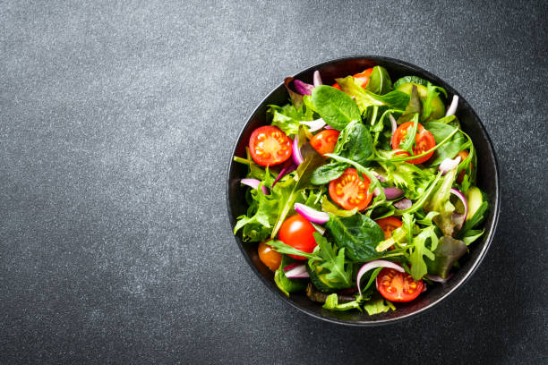

Green Salad Recipe

Description
This recipe not only delivers a healthy but also tasty and easy to make green salad
Ingredients
- Lettuce
- Cucumber
- Tomatoes
- Carrot
- Goat Cheese
- Salad Dressing
Steps
- Washing and Drying: Wash your greens and properly dry them. You don't want a soggy salad in the end
- Cutting Edge: Slice your cucumber, tomatoes and carrots into thin slices and add them to your salad bowl and combine it with the lettuce. Add more and more dressing as you twirl everything around.
- The Cheese: Finalize your salad with crumbs of goat cheese.